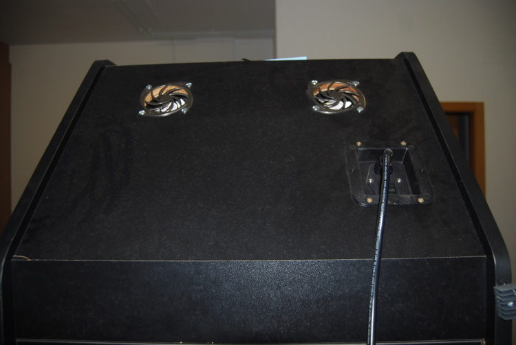

Capítulo 6.1 Construcción de máquina recreativa - Mueble - Entrada de alimentación y ventilación
La ventilación se encuentra en la parte superior trasera y está formada por 2 ventiladores de PC de 8x8 cm., con sus correspondientes embellecedores, tanto por fuera como por dentro.
Para la entrada de corriente he usado una muy parecida a la original de la máquina.

Figura 6.1.1 Exterior entrada alimentación y ventilación

Figura 6.1.2 Interior entrada alimentación y ventilación